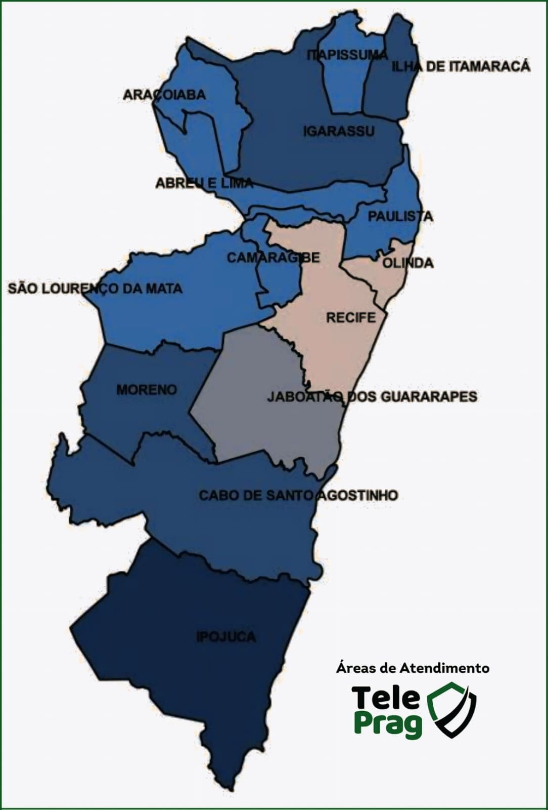

Área de Cobertura
Atendemos toda a Região Metropolitana do Recife com agilidade e eficiência.

Regiões Atendidas
Estamos estrategicamente localizados para atender com rapidez e eficiência toda a região metropolitana do Recife.
Recife
Olinda
Jaboatão dos Guararapes
Paulista
Camaragibe
Cabo de Santo Agostinho
Igarassu
Abreu e Lima

Atendemos outras localidades
Além das cidades listadas, também podemos atender outras localidades da Região Metropolitana do Recife. Entre em contato para verificar a disponibilidade para sua região.
Quer saber se atendemos sua região?
Entre em contato conosco e verifique a disponibilidade para seu endereço.